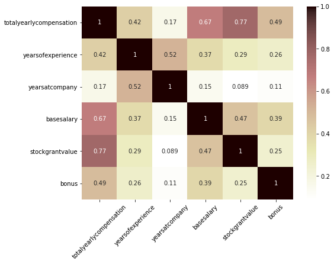
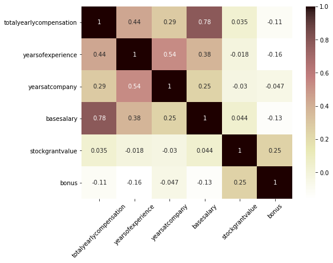
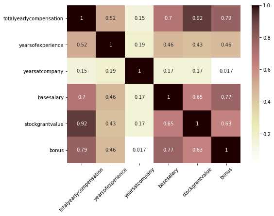
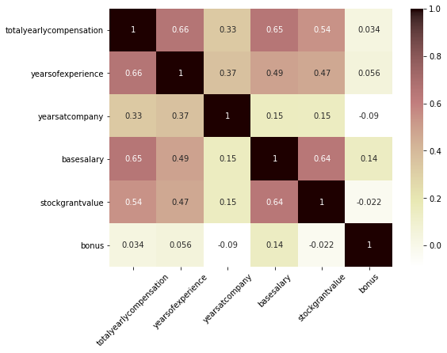
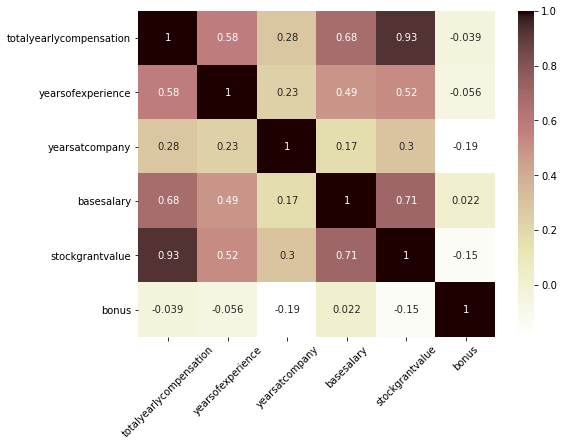

STEM Salaries 2
Table of contents
*분석 대상 데이터셋: Data Science and STEM Salaries
- 데이터셋 출처
- levels.fyi에서 가져온 62,642개의 salary data (Data Science & STEM 직종)
- 2017.06.07 ~ 2021.08.17의 기간에 기록된 약 1060개의 회사, 15개 job title에 대한 데이터
데이터 정리
# 필요한 라이브러리 import
import pandas as pd
import numpy as np
import plotly.express as px
import plotly.io as pio
pio.templates.default = "plotly_white" # default template을 지정
salary_df = pd.read_csv('data/Levels_Fyi_Salary_Data.csv')
salary_df.head(3)
| timestamp | company | level | title | totalyearlycompensation | location | yearsofexperience | yearsatcompany | tag | basesalary | stockgrantvalue | bonus | gender | otherdetails | cityid | dmaid | rowNumber | Masters_Degree | Bachelors_Degree | Doctorate_Degree | Highschool | Some_College | Race_Asian | Race_White | Race_Two_Or_More | Race_Black | Race_Hispanic | Race | Education | |
|---|---|---|---|---|---|---|---|---|---|---|---|---|---|---|---|---|---|---|---|---|---|---|---|---|---|---|---|---|---|
| 0 | 6/7/2017 11:33:27 | Oracle | L3 | Product Manager | 127000 | Redwood City, CA | 1.5 | 1.5 | nan | 107000 | 20000 | 10000 | nan | nan | 7392 | 807 | 1 | 0 | 0 | 0 | 0 | 0 | 0 | 0 | 0 | 0 | 0 | nan | nan |
| 1 | 6/10/2017 17:11:29 | eBay | SE 2 | Software Engineer | 100000 | San Francisco, CA | 5 | 3 | nan | 0 | 0 | 0 | nan | nan | 7419 | 807 | 2 | 0 | 0 | 0 | 0 | 0 | 0 | 0 | 0 | 0 | 0 | nan | nan |
| 2 | 6/11/2017 14:53:57 | Amazon | L7 | Product Manager | 310000 | Seattle, WA | 8 | 0 | nan | 155000 | 0 | 0 | nan | nan | 11527 | 819 | 3 | 0 | 0 | 0 | 0 | 0 | 0 | 0 | 0 | 0 | 0 | nan | nan |
- 불필요한 칼럼 삭제
- cityid, dmaid, rowNumber 칼럼은 불필요하다고 판단
- Masters_Degree ~ Race_Hispanic 칼럼은 ‘Race’와 ‘Education’의 정보를 더미변수화해놓은 칼럼이므로 우선 삭제
drop_columns = salary_df.loc[:, 'cityid':'Race_Hispanic'].columns salary_df.drop(drop_columns, axis='columns', inplace=True) - 중복값 제거
- 모든 컬럼이 중복되는 경우는 실수로 중복 기입된 것이라 간주, 하나의 row만 남기고 삭제
print('중복 제거 이전: ', len(salary_df)) salary_df.drop_duplicates(inplace=True, ignore_index=True) print('중복 제거 이후: ', len(salary_df))중복 제거 이전: 62642 중복 제거 이후: 62598 -
결측치 채우기
salary_df[['gender', 'Race', 'Education']] = salary_df[['gender', 'Race', 'Education']].fillna('Unknown') -
이상한 값 처리
# gender == "Title: Senior Software Engineer"라고 기입되어 있던 행의 gender 값을 'Unknown'으로 바꿔줌 salary_df.loc[10985, 'gender'] = 'Unknown'
company 표기 통일
- 공백을 제거하고 uppercase로 맞춰줌
salary_df['company'] = salary_df['company'].str.strip().str.upper() - llc, org, ltd 등 뒤에 붙는 다양한 단어들을 지워줌
salary_df['company'] = salary_df['company'].str.replace(' LLC', '').str.replace('.ORG', '').str.replace(' LTD', '').str.replace(' CORPORATION', '').str.replace(' INC', '') salary_df['company'] = salary_df['company'].str.replace(' MEDIA', '').str.replace(' GROUP', '').str.replace(' TECHNOLOGY', '').str.replace(' TECHNOLOGIES', '').str.strip()salary_df['company'].nunique()1081 - 같은 회사인데 표기가 다른 경우를 함수로 만들어서 정리
- ‘amazon.com’과 ‘amazon web services’처럼 계열사지만 다른 기업이라고 판단되는 경우는 그냥 둠
def clean_company_names(name): try: if name.startswith('AMAZON.COM'): final_name = 'AMAZON' elif name.startswith('ARISTA'): final_name = 'ARISTA' elif name.startswith('BLOOMBERG'): final_name = 'BLOOMBERG' elif name.startswith('BOOKING'): final_name = 'BOOKING.COM' elif name.startswith('DELOITTE CONSULTING'): final_name = 'DELOITTE CONSULTING' elif name.startswith('FORD'): final_name = 'FORD' elif name.startswith('CADENCE'): final_name = 'CADENCE' elif name.startswith('MCKINSEY'): final_name = 'MCKINSEY & COMPANY elif name.startswith('MOTOROLA'): final_name = 'MOTOROLA' elif name.startswith('NUANCE'): final_name = 'NUANCE elif name.startswith('COSTCO'): final_name = 'COSTCO' elif name.startswith('TOYOTA'): final_name = 'TOYOTA' elif name.startswith('WALMART'): final_name = 'WALMART' elif name.startswith('MOODY'): final_name = "MOODY'S" elif name.startswith('MACY'): final_name = "MACY'S" elif name.startswith('ERNST'): final_name = "ERNST & YOUNG" elif name.startswith('JANE STREET'): final_name = 'JANE STREET CAPITAL' elif name.startswith('LIBERTY MUTUAL'): final_name = 'LIBERTY MUTUAL' elif name.startswith('SAMSUNG'): final_name = 'SAMSUNG' else: final_name = name except: final_name = name return final_name salary_df['company'] = salary_df['company'].apply(lambda name: clean_company_names(name))→ 최종적으로 정리 완료된 기업 수:
salary_df['company'].nunique()1060
기간별 비교
datetime 타입 가공
-
datetime 타입으로 변환
salary_df['timestamp'] = pd.to_datetime(salary_df['timestamp'])- timestamp 칼럼은 levels.fyi에 데이터가 기록된 시점을 의미
-
기간을 월별, 분기별로 묶어줌
salary_df['yearmonth'] = salary_df['timestamp'].dt.strftime('%Y%m') salary_df['yearquarter'] = salary_df['timestamp'].dt.to_period("Q").astype('str') salary_df[['timestamp', 'yearmonth', 'yearquarter']].head()timestamp yearmonth yearquarter 0 2017-06-07 11:33:27 201706 2017Q2 1 2017-06-10 17:11:29 201706 2017Q2 2 2017-06-11 14:53:57 201706 2017Q2 3 2017-06-17 00:23:14 201706 2017Q2 4 2017-06-20 10:58:51 201706 2017Q2
분기별 추이 비교
-
분기별 평균 yearly compensation
quarterly_sal = salary_df.groupby(['yearquarter'])[['totalyearlycompensation']].agg(['mean', 'count']) quarterly_sal = quarterly_sal['totalyearlycompensation'].reset_index() fig = px.line(quarterly_sal, x='yearquarter', y='mean', hover_data=['count'], labels={'mean':'average yearly compensation', 'yearquarter':'posted quarter', 'count':'data count'}, color_discrete_sequence=px.colors.qualitative.Antique) fig.show()- 2018Q1 이후 평균 yearly compensation은 약간 하락세를 보임. 하지만 점점 사이트에 등록된 data 수가 증가하면서 yearly compensation의 평균값이 평균으로 회귀하는 것일 수도 있으므로… 평균 salary가 하락세라고 단정적으로 말하기는 어렵다.
-
분기별 등록된 data의 수
fig = px.histogram(salary_df, x='yearquarter', labels={'yearquarter':'posted quarter'}, color_discrete_sequence=px.colors.qualitative.Antique) fig.show()
basesalary, stock, bonus
totalyearlycompensation과의 관계
- totalyearlycompensation (연간 총소득)과 다른 변수들이 어떤 관계가 있는지 확인
-
변수들 간의 상관관계를 파악
plt.figure(figsize=(8, 6)) sns.heatmap(salary_df.corr(), annot=True, cmap='pink_r') plt.xticks(rotation=45);
- basesalary와 stockgrantvalue가 가장 totalyearlycompensation과 상관관계가 강한 편
-
basesalary와 totalyearlycompensation 사이의 관계
fig = px.scatter(salary_df, x='basesalary', y='totalyearlycompensation', trendline='ols', hover_name='company', hover_data = ['gender', 'Race', 'Education'], color_discrete_sequence=px.colors.qualitative.Antique, trendline_color_override='peachpuff') fig.show() -
stockgrantvalue와 totalyearlycompensation 사이의 관계
fig = px.scatter(salary_df, x='stockgrantvalue', y='totalyearlycompensation', trendline='ols', hover_name='company', hover_data = ['gender', 'Race', 'Education'], color_discrete_sequence=px.colors.qualitative.Antique, trendline_color_override='peachpuff') fig.show()
기업별 salary, bonus, stock grant value
- 평균 yearly compensation이 높은 기업 top 10
- 100명 이상의 기록이 있는 기업에 한해 분석 (수가 적으면 1명의 값에 영향을 너무 크게 받으므로)
sal_comp = salary_df.groupby(['company'])[['totalyearlycompensation']].agg(['mean', 'count']) sal_comp = sal_comp['totalyearlycompensation'].reset_index() sal_comp = sal_comp.query('count >= 100') fig = px.bar(sal_comp.sort_values('mean', ascending=False).head(10), x='company', y='mean', color='mean', hover_name='company', hover_data=['count'], labels={'mean':'average yearly compensation', 'count':'data count'}, color_continuous_scale = 'Brwnyl') fig.update(layout_coloraxis_showscale=False) fig.show() - 평균 base salary가 높은 기업 top 10
- 100명 이상의 기록이 있는 기업에 한해 분석
- basesalary > 0인 경우에 한해서 분석 (base salary가 없을 수는 없으므로, 0이라고 적힌 것은 결측치라고 간주)
base_comp = salary_df.query('basesalary > 0').groupby(['company'])[['basesalary']].agg(['mean', 'count']) base_comp = base_comp['basesalary'].reset_index() base_comp = base_comp.query('count >= 100') fig = px.bar(base_comp.sort_values('mean', ascending=False).head(10), x='company', y='mean', color='mean', hover_name='company', hover_data=['count'], labels={'mean':'average base salary', 'count':'data count'}, color_continuous_scale = 'Brwnyl') fig.update(layout_coloraxis_showscale=False) fig.show()- Netflix를 제외하고는 total yearly compensation과 순위가 많이 달라짐
- Netflix의 경우 total yearly compensation의 평균과 base salary의 평균이 크게 다르지 않다는 것을 알 수 있음
-
변수 간 관계 파악: Netflix
plt.figure(figsize=(8, 6)) sns.heatmap(salary_df.query('company == "NETFLIX"').corr(), annot=True, cmap='pink_r') plt.xticks(rotation=45);
- Netflix의 경우, total yearly compensation은 base salary와 가장 강한 관계를 보이고, stock grant value나 bonus와는 관계가 없다는 것이 확인됨
- Netflix는 stock grant나 bonus를 통해 보상을 크게 지급하기보다는 base salary 자체를 높게 가져가는 연봉 체계를 가지고 있는 것으로 추측됨
- 평균 bonus가 많은 기업 top 10
- 100명 이상의 기록이 있는 기업에 한해 분석
bonus_comp = salary_df.groupby(['company'])[['bonus']].agg(['mean', 'count']) bonus_comp = bonus_comp['bonus'].reset_index() bonus_comp = bonus_comp.query('count >= 100') fig = px.bar(bonus_comp.sort_values('mean', ascending=False).head(10), x='company', y='mean', color='mean', hover_name='company', hover_data=['count'], labels={'mean':'average bonus', 'count':'data count'}, color_continuous_scale = 'Brwnyl') fig.update(layout_coloraxis_showscale=False) fig.show() -
변수 간 관계 파악: Cruise
plt.figure(figsize=(8, 6)) sns.heatmap(salary_df.query('company == "CRUISE"').corr(), annot=True, cmap='pink_r') plt.xticks(rotation=45);
- Cruise의 경우, base salary뿐 아니라 stock grant value와 bonus도 totaly yearly compensation과 강한 관계를 보임
- 평균 stock grant value가 많은 기업 top 10
- 100명 이상의 기록이 있는 기업에 한해 분석
stock_comp = salary_df.groupby(['company'])[['stockgrantvalue']].agg(['mean', 'count']) stock_comp = stock_comp['stockgrantvalue'].reset_index() stock_comp = stock_comp.query('count >= 100') fig = px.bar(stock_comp.sort_values('mean', ascending=False).head(10), x='company', y='mean', color='mean', hover_name='company', hover_data=['count'], # hover했을 때의 제목 & 정보 추가 labels={'mean':'average stock grant value', 'count':'data count'}, color_continuous_scale = 'Brwnyl') fig.update(layout_coloraxis_showscale=False) # 원래 오른쪽에 나오게 되는 colorbar를 숨김 fig.show() -
변수 간 관계 파악: Snap
plt.figure(figsize=(8, 6)) sns.heatmap(salary_df.query('company == "SNAP"').corr(), annot=True, cmap='pink_r') plt.xticks(rotation=45);
- 다소 약하긴 하지만, stock grant value가 total yearly compensation과 어느 정도의 상관관계를 보임
-
변수 간 관계 파악: Lyft
plt.figure(figsize=(8, 6)) sns.heatmap(salary_df.query('company == "LYFT"').corr(), annot=True, cmap='pink_r') plt.xticks(rotation=45);
- Lyft는 stock grant value가 total yearly compensation가 가장 강한 관계를 보임
>> 결론: 기업마다 각자의 보상 체계에 따라, base salary가 total yearly compensation을 거의 결정하기도 하고, bonus나 stock grant value가 total yearly compensation의 많은 부분을 차지하기도 한다
(total yearly compensation과 각 변수 간의 관계는 기업에 따라 달라진다)
Data Scientist 정보 파악
: 최근 유망한 직종인 Data Scientist에 대해 집중 탐구
분기별 추이
-
분기별 data 수의 변화
quarterly_ds_sal = ds_salary.groupby(['yearquarter'])[['totalyearlycompensation']].agg(['mean', 'count']) quarterly_ds_sal = quarterly_ds_sal['totalyearlycompensation'].reset_index() fig = px.bar(quarterly_ds_sal, x='yearquarter', y='count', labels={'yearquarter':'posted quarter', 'count':'data count'}, color_discrete_sequence=px.colors.qualitative.Antique) fig.show()- 2021Q3은 2021.08.17까지밖에 없어서 적은 것
- 점점 data scientist에 대한 기록이 증가하는 것으로 보이나, 전반적으로 이 dataset에서는 직업에 관계 없이 최근 분기일수록 더 기록이 많아지기 때문에 data scientist에 대한 관심이 증가한 것이라고 해석하기는 어려움
- 분기별 data scientist 기록의 전체 대비 %
- data scientist 뿐 아니라 다른 data도 수가 같이 증가하므로, 전체 대비 %를 계산해봄
temp1 = salary_df.groupby(['yearquarter'])[['timestamp']].count() temp1.rename(columns={'timestamp':'total_count'}, inplace=True) temp2 = ds_salary.groupby(['yearquarter'])[['timestamp']].count() temp2.rename(columns={'timestamp':'ds_count'}, inplace=True) temp3 = temp1.join(temp2) temp3.fillna(0, inplace=True) temp3['ds_ratio'] = temp3['ds_count'] / temp3['total_count'] fig = px.bar(temp3.reset_index(), x='yearquarter', y='ds_ratio', labels={'yearquarter':'posted quarter'}, color_discrete_sequence=px.colors.qualitative.Antique) fig.layout.yaxis.tickformat = ',.2%' fig.show()- 2018년 Q4부터는 Data Scientist에 대한 기록이 꾸준히 전체의 4% 내외로 유지됨
- 물론 levels.fyi에 기록되지 않은 데이터가 많겠지만, 주어진 데이터만 보면 Data Scientist의 수가 다른 STEM 직종에 비해 유독 증가하고 있다고 보기는 어려움
-
분기별 data scientist의 평균 yearly compensation
fig = px.bar(quarterly_ds_sal, x='yearquarter', y='mean', hover_data=['count'], labels={'mean':'average yearly compensation', 'yearquarter':'posted quarter', 'count':'data count'}, color_discrete_sequence=px.colors.qualitative.Antique) fig.show()- 2018Q2는 data 수가 너무 적으므로 제외하고 생각하면, 대체로 data scientist의 평균 yearly compensation은 비슷한 수준으로 유지됨
gender, race, education
- Gender별 기록 수
- levels.fyi에 기록된 데이터에만 한정된 분석이지만, Data Scientist라는 직업에 어느 성별이 더 많은지 대강 파악할 수 있음
fig = px.pie(ds_salary.query('gender != "Unknown"'), names='gender', # Unkown은 제외하고 계산 color_discrete_sequence=px.colors.qualitative.Antique, hole=0.4) fig.show()- 남성이 3/4 이상을 차지
-
Race별 기록 수
fig = px.pie(ds_salary.query('Race != "Unknown"'), names='Race', # Unkown은 제외하고 계산 color_discrete_sequence=px.colors.qualitative.Antique, hole=0.4) fig.show()- Asian이 과반수를 차지, 그 다음은 White
-
Education별 기록 수
fig = px.pie(ds_salary.query('Education != "Unknown"'), names='Education', color_discrete_sequence=px.colors.qualitative.Antique, hole=0.4) fig.show()- Master’s Degree 소지자가 과반수, 그 다음은 PhD
- 석사 학위 이상을 소지한 사람이 유독 많은 직업군으로 보임
(cf. 전체 데이터 중에서는 학사 학위 소지자가 약 41.5%)
-
Gender별 평균 yearly compensation
ds_sal_gend = ds_salary.groupby('gender')[['totalyearlycompensation']].agg(['mean', 'count']) ds_sal_gend = ds_sal_gend['totalyearlycompensation'].reset_index() fig = px.bar(ds_sal_gend, x='gender', y='mean', color='gender', hover_name='gender', hover_data=['count'], labels={'mean':'average yearly compensation', 'count':'data count'}, color_discrete_sequence=px.colors.qualitative.Antique) fig.update_traces(showlegend=False) fig.show()- Male이 Female보다 다소 높지만, 차이가 아주 유의미하다고 보기는 어려울 듯
(cf. 평균 차이를 t-test로 검정하면 p값은 0.02 정도)
- Male이 Female보다 다소 높지만, 차이가 아주 유의미하다고 보기는 어려울 듯
-
Race별 평균 yearly compensation
ds_sal_race = ds_salary.groupby('Race')[['totalyearlycompensation']].agg(['mean', 'count']) ds_sal_race = ds_sal_race['totalyearlycompensation'].reset_index() fig = px.bar(ds_sal_race, x='Race', y='mean', color='Race', category_orders={'Race':['White', 'Asian', 'Black', 'Hispanic']}, hover_name='Race', hover_data=['count'], labels={'mean':'average yearly compensation', 'count':'data count'}, color_discrete_sequence=px.colors.qualitative.Antique) fig.update_traces(showlegend=False) fig.show()- 등록된 Data Scientist의 수는 Asian이 더 많지만, 연간 보상의 평균은 White가 Asian보다 다소 높음
-
Education별 평균 yearly compensation
ds_sal_edu = ds_salary.groupby('Education')[['totalyearlycompensation']].agg(['mean', 'count']) ds_sal_edu = ds_sal_edu['totalyearlycompensation'].reset_index() fig = px.bar(ds_sal_edu, x='Education', y='mean', color='Education', category_orders={'Education':['PhD', "Master's Degree", "Bachelor's Degree", 'Some College', 'Highschool']}, hover_name='Education', hover_data=['count'], labels={'mean':'average yearly compensation', 'count':'data count'}, color_discrete_sequence=px.colors.qualitative.Antique) fig.update_traces(showlegend=False) fig.show()- 등록된 Data Scientist의 수는 Master’s Degree 소지자가 가장 많지만, 연간 보상의 평균은 PhD 소지자가 가장 높음
Top 기업 파악
-
등록된 data scientist 수가 많은 기업 확인
ds_count = ds_salary.groupby(['company'])[['timestamp']].count().reset_index() fig = px.bar(ds_count.sort_values('timestamp', ascending=False).head(10), x='company', y='timestamp', color='timestamp', hover_name='company', labels={'timestamp':'data count'}, color_continuous_scale = 'Brwnyl') fig.update(layout_coloraxis_showscale=False) fig.show()- 가장 Data Scientist를 많이 고용하는 회사는 Amazon, Microsoft, Facebook이라고 추정 (회사의 규모와 비례하는 듯)
-
Salary Top 기업
- 평균 yearly compensation이 높은 top 10 기업 파악
- 20명 이상의 기록이 있는 기업에 한해 분석 (수가 적으면 평균이 1명의 영향을 크게 받으므로)
ds_sal_comp = ds_salary.groupby(['company'])[['totalyearlycompensation']].agg(['mean', 'count']) ds_sal_comp = ds_sal_comp['totalyearlycompensation'].reset_index() ds_sal_comp = ds_sal_comp.query('count >= 20') fig = px.bar(ds_sal_comp.sort_values('mean', ascending=False).head(10), x='company', y='mean', color='mean', hover_name='company', hover_data=['count'], # hover했을 때의 제목 & 정보 추가 labels={'mean':'average yearly compensation', 'count':'data count'}, color_continuous_scale = 'Brwnyl') fig.update(layout_coloraxis_showscale=False) # 원래 오른쪽에 나오게 되는 colorbar를 숨김 fig.show()- 가장 평균 yearly compensation이 높은 기업은 Netflix